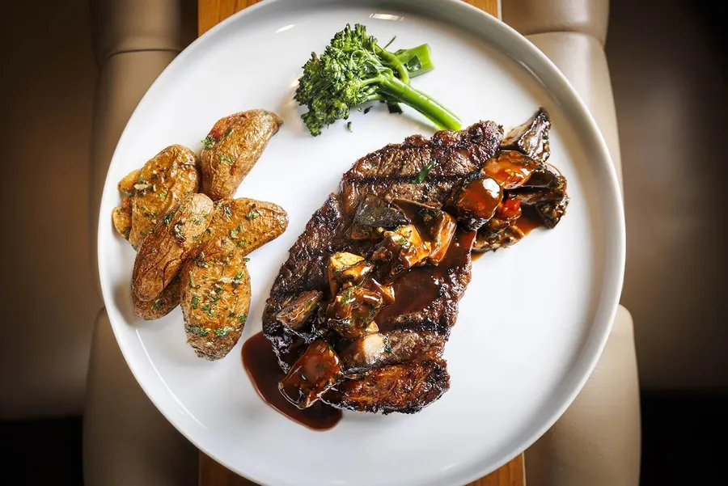

Top pick
1. Sunness Supper Club
Fort Lauderdale · East Sunrise Blvd
Modern American supper club · steaks & chops
- Friday: 5:00–11:00 PM
- Drive: about 40–50 min from home in Boca, arrive about 6:15 PM
- Price: $$$$ · entrées $25–76 · OpenTable "$50 and over"
- Rating: OpenTable 4.8★ (465)
Low lights, warm wood and long banquettes downstairs, with Bar Betty, a hidden speakeasy, up the stairs.
Why it fits you two
This is the one with a named act booked for your exact night. Ginetta Vendetta plays pocket trumpet and sings with her jazz combo in the dining room from 6 to 9. After dinner you can head upstairs to Bar Betty, where the Minerva Duo plays from 8:30 to 11:30. Diners give it 4.8 on OpenTable and rate the noise as moderate, so you can still talk.
What to order
Wagyu Beef Skirt Steak & Truffle Frites14 oz with chimichurri. Don's non-fish pick ($76)
Filet Mignon (8 oz)Caitlin's pick, with the demi-glace on the side ($73)
Cabernet Braised Short RibRed bliss mash and honey carrots. Another non-fish pick for Don ($53)
Gluten-free pick
Nothing on the menu is marked GF. The simplest order is the 8 oz filet or the 16 oz Delmonico ribeye with sauce on the side, plus grilled asparagus or broccolini, or the watermelon & feta salad.Caitlin's drink: zero-proof drinks on the menu
Zero-proof list ($16): the Phony Negroni (The Pathfinder, zero bitter aperitif, zero vermouth) and the Garden Spritz (The Pathfinder, Aplós Calme, lemon, cucumber tonic). Five cocktails marked "R" also come N/A with Ritual, including the Tea Thyme Collins and Elusive Dreams. Two notes: Aplós Calme is hemp-infused, and the Cali Sunrise on that list is a THC drink, so skip that one.Music
Ginetta Vendetta jazz combo, Fri Oct 9, 6:00–9:00 PM in the dining room. Upstairs at Bar Betty: the Minerva Duo, 8:30–11:30 PM. The club says to call the day of to confirm."Every detail was incredible from the secretive entrance, amazing cocktails, food that was unique and delicious, and wonderful service."OpenTable diner · 4.8★ (465)
Valet parking. A 3% adjustment is added when you pay by card. Book for about 6:15 so you hear most of the set. 2465 E Sunrise Blvd.
Photos: sunnesssupperclub.com